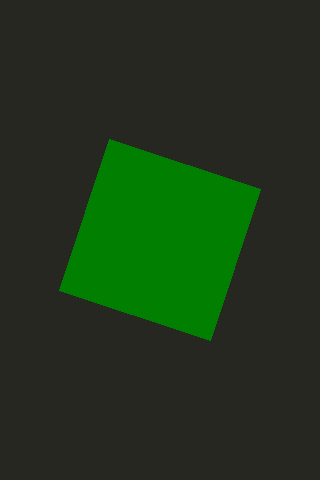

Use Case - Integrating JavaScript in QML
JavaScript code can be easily integrated into QML to provide UI logic, imperative control, or other benefits.
Using JavaScript Expressions for Property Values
JavaScript expressions can be used in QML as bindings. For example
Item {
width: Math.random()
height: width < 100 ? 100 : (width + 50) / 2
}
Note that function calls, like Math.random(), will not be revaluated unless their arguments change. So binding to Math.random() will be one random number and not revaluated, but if the width is changed in some other manner, the height binding will be reevaluated to take that into account.
Adding JavaScript Functions in QML
JavaScript functions can be declared on QML items, like in the below example. This allows you to call the method using the item id.
import QtQuick 2.3 Item { id: container width: 320 height: 480 function randomNumber() { return Math.random() * 360; } function getNumber() { return container.randomNumber(); } MouseArea { anchors.fill: parent // This line uses the JS function from the item onClicked: rectangle.rotation = container.getNumber(); } Rectangle { color: "#272822" width: 320 height: 480 } Rectangle { id: rectangle anchors.centerIn: parent width: 160 height: 160 color: "green" Behavior on rotation { RotationAnimation { direction: RotationAnimation.Clockwise } } } }
Using JavaScript files
JavaScript files can be used for abstracting out logic from QML files. To do this, first place your functions inside a .js file like in the example shown.
// myscript.js function getRandom(previousValue) { return Math.floor(previousValue + Math.random() * 90) % 360; }
Then import the file into any .qml file that needs to use the functions, like the example QML file below.
import QtQuick 2.3 import "myscript.js" as Logic Item { width: 320 height: 480 Rectangle { color: "#272822" width: 320 height: 480 } MouseArea { anchors.fill: parent // This line uses the JS function from the separate JS file onClicked: rectangle.rotation = Logic.getRandom(rectangle.rotation); } Rectangle { id: rectangle anchors.centerIn: parent width: 160 height: 160 color: "green" Behavior on rotation { RotationAnimation { direction: RotationAnimation.Clockwise } } } }

For further details on the JavaScript engine used by QML, as well as the difference from browser JS, see the full documentation on Using JavaScript Expressions with QML.